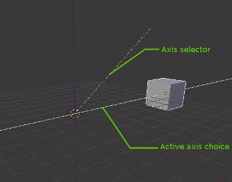

轴向锁定¶
{kind=link}
Axis locking.
This option limits the transformation to the specified axis.
Transformations (translation/scale/rotation) in Object Mode and Edit Mode, as well as extrusion in Edit Mode) can be locked to particular axis relative to the current transform orientation. By locking a transformation to a particular axis you are restricting transformations to a single dimension.
使用方法¶
A locked axis will display in a brighter color than an unlocked axis. For example in the image to the right, the Z axis is drawn in light blue as movement is constrained to this axis. This example, can be achieved in two ways:
Hotkey¶
The axis of movement can be changed at any time during transformation by typing X, Y, Z.
Pointing¶
Axis-Constraint in action.
Holding MMB after starting a transformation lets you select an axis to constrain to.
A visual option to constrain the translation will be available,
showing the three axes in the 3D View space. A dotted white line is used as a pointer.
The axis of choice to confirm the operation
will depend on the highlighted axis about which the MMB is released.
When you already moved the mouse in the desired direction,
pressing MMB will lock to the axis in which was pointed at.
轴锁类型¶
轴向锁定¶
参考
X, Y, Z 或在所需的方向移动鼠标按 MMB轴锁限制变换到一个单一的轴 (或禁止沿两个坐标轴变换)。物体、 面、 顶点或其他可选择的元素将只能够在单个维度移动、 缩放或旋转。
平面锁定¶
参考
Shift-X, Shift-Y, Shift-Z or Shift-MMB
after moving the mouse in the desired direction.{kind=link}
Plane locking.
平面锁定变换到 两个 轴 (或禁止沿一个轴变换)，由此创建的平面可以让元素自由移动或缩放。平面锁只影响平移和缩放。
注意对于旋转，轴和平面锁定有同样的效果，因为旋转总是约束围绕一个轴的。轨迹球 类型旋转 R-R 根本不能锁定。
轴向锁定模式¶
{kind=link}
Axis locking modes.
按一次按键约束到相应的移动 全局 轴。第二次按下 相同 键约束到当前选择的变换坐标系的移动 (除了它被设置为 全局，在这种情况下 自身 坐标系被使用掉)。最后，第三次按相同的键后会删除约束。
The orientation can be set in the Transform Orientation selector of the 3D View header.
For example, if the current transform orientation is set to Normal,
pressing G to start translation, followed by Z will lock translation
in the Z direction relative to the Global orientation, pressing Z
again will lock translation to the Z axis relative to the Normal orientation.
Pressing Z again will remove all constraints.
The current mode will be displayed in the left hand side of the 3D View header.
As can be seen in the Axis locking modes image, the direction of the transform also takes into account the selection.
Note that using a locked axis does not prevent you from using the keyboard to enter numeric transformation values.